Final: Shoujo Anime Glitch Arts
Skip & Loafer: Mitsumi & Sousuke Glitch Final Result
Skip & Loafer Museum Glitch
For this artwork, I used Adobe Photoshop and Text Editor to see if it can convince my audience to watch the anime.
Kimi Ni Todoke: Sawako & Kazehaya Glitch Final Result
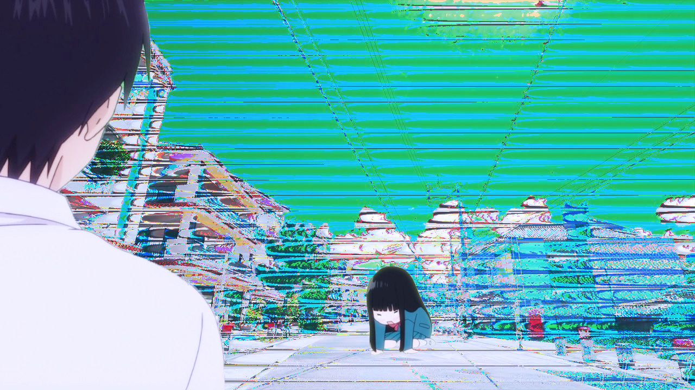Kimi ni Todoke Glitch
I created this artwork by using Adobe Photoshop & Audacity. For the effect, I used phaser.
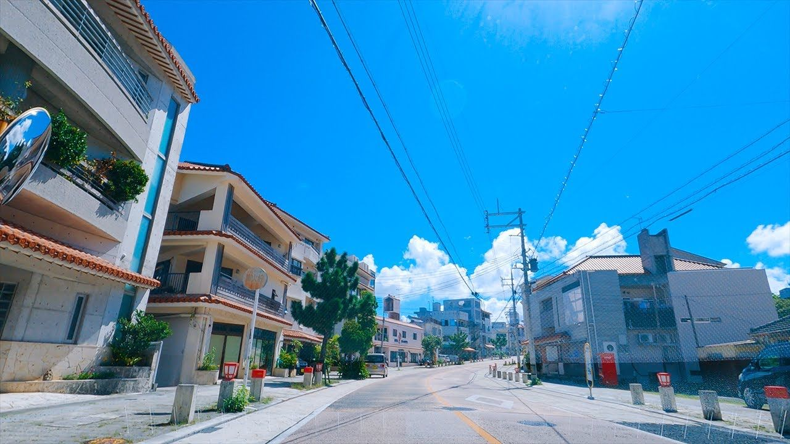Background

Crying Sawako

Kazehaya

Changing it to phaser using Audacity.

Completing the edit and ready for exporting.
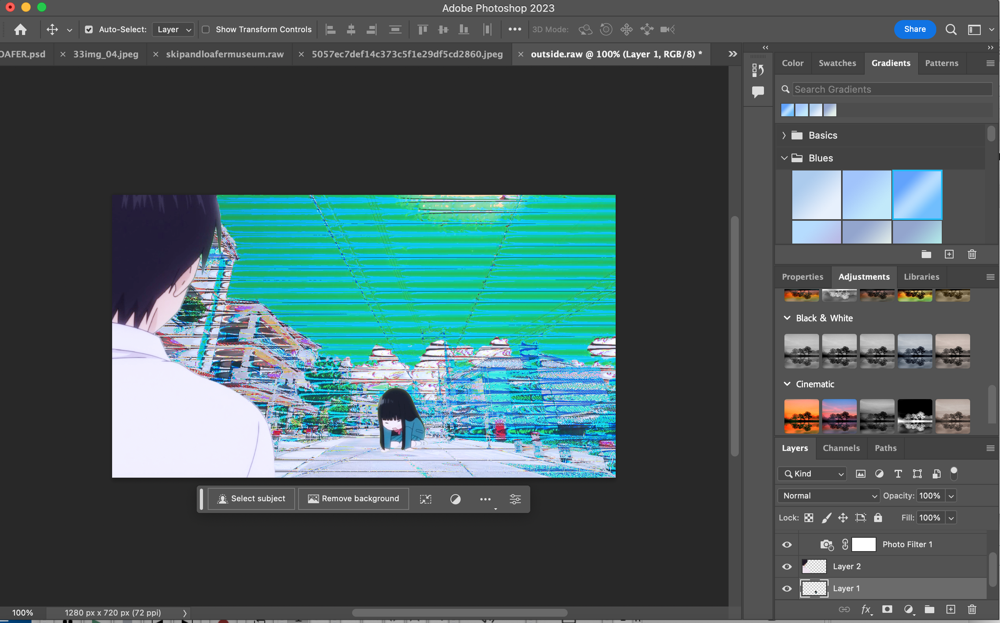
Editing it on Photoshop, & final result.
Nana: Komatsu & Osaki Glitch Final Result
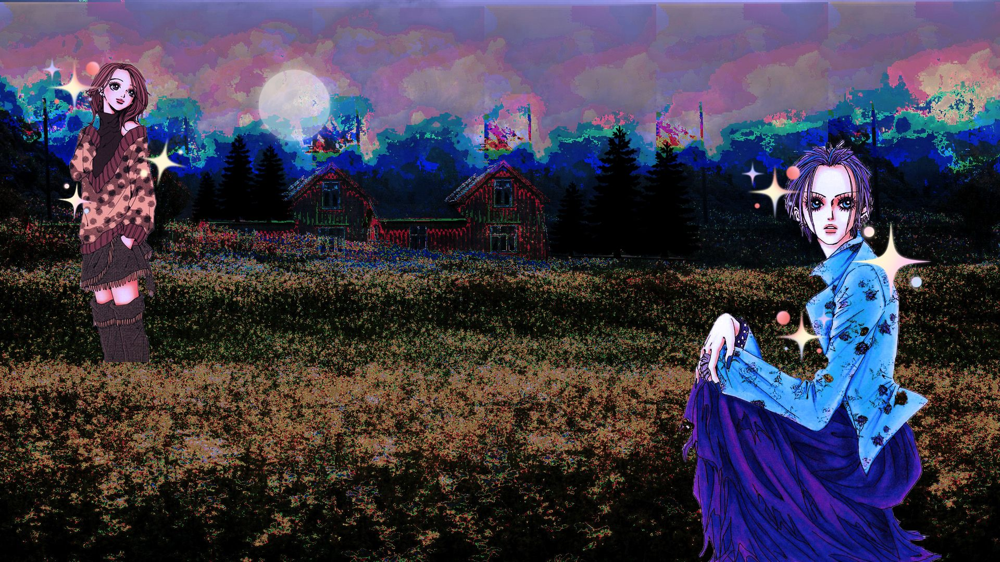Nana Farm Glitch
Materials: Adobe Photoshop, Audacity, & Canva

The background is a small cottage house nearby the mountains.
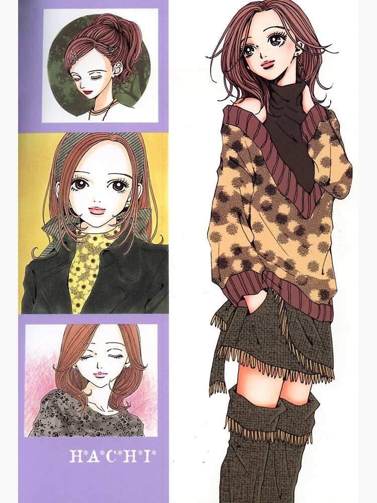Model #1: Nana Komatsu
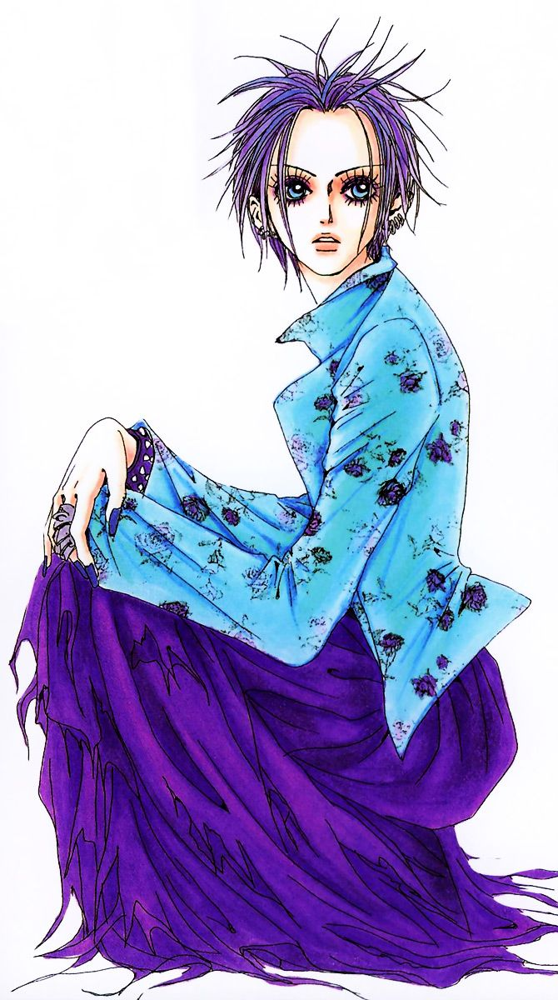Model #2: Nana Osaki
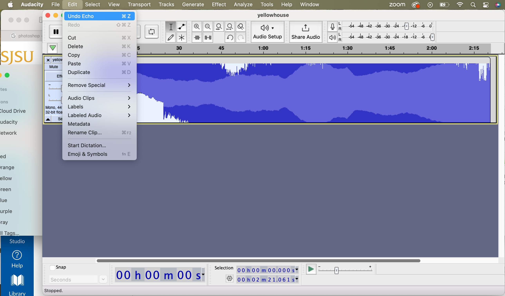Editing the artwork using Audacity and echo effect.
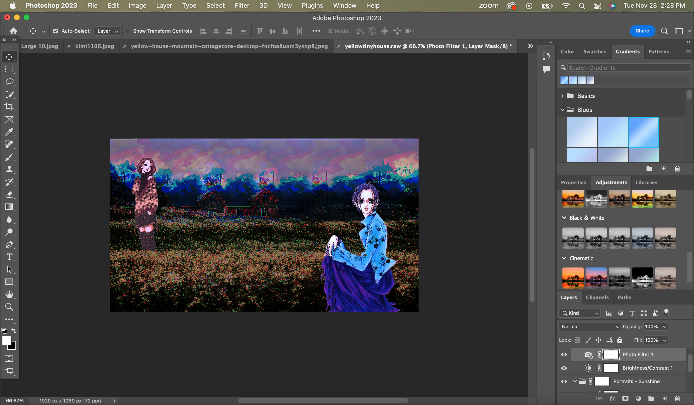Completing edits on Photoshop.
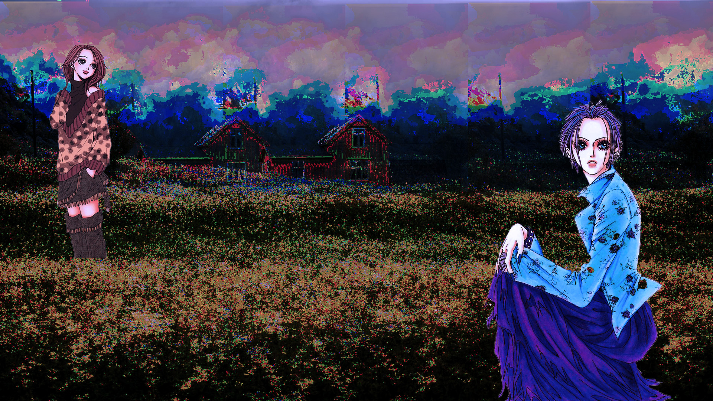
Rough Draft

Editing final results on Canva.
I decided to centrally focus on shoujo anime as my topic for my glitch mashup artworks because I don't normally see people create glitches of shoujo anime. I chose three significant anime series that are part of the shoujo genre, Skip and Loafer, Kimi ni Todoke (From Me to You), and NANA. All of the artworks have different settings and effects so that each one of them can stand out on their own.
Final Pt. 2: Shoujo Anime Mashup Arts
For the next part, I created edited shoujo anime mashups without any glitches to see if there are any significant improvements, or to see which ones I like better as results.
Shikimori's Not a Cutie: Shikimori & Izumi Edits
Before
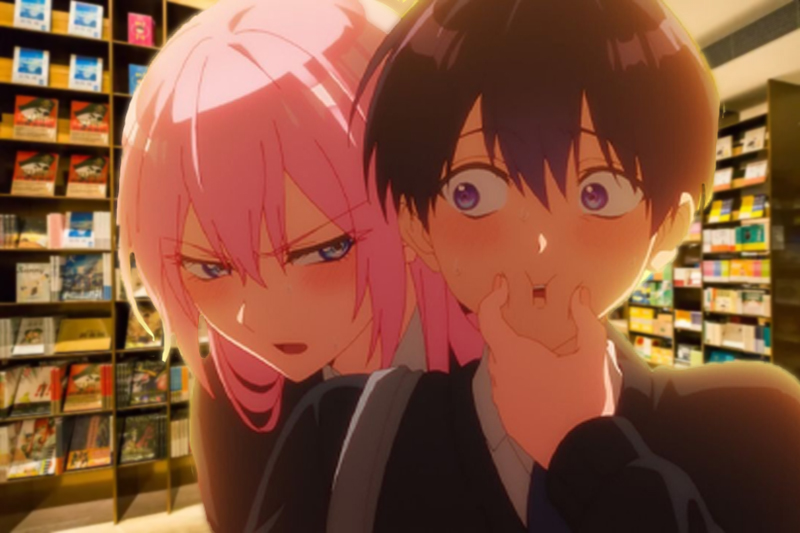
After
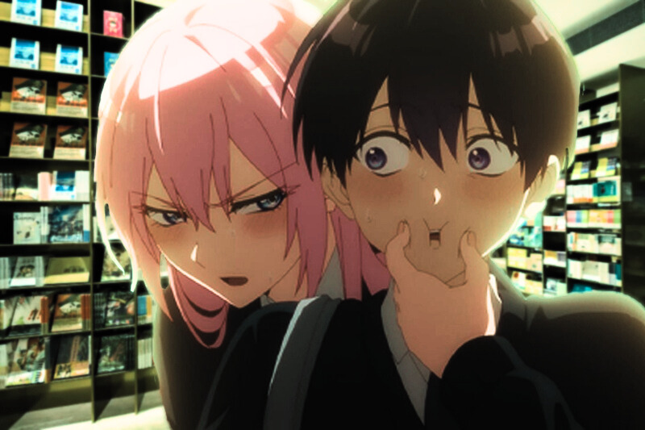
I edited this one scene from the anime, Shikimori's Not a Cutie, with a background of the manga section taken place at the Starfield Library in Korea. The materials I used are Adobe Photoshop and Canva.
Kamisama Kiss (Kamisama Hajimemashita: Tomoe & Nanami Edits
Before
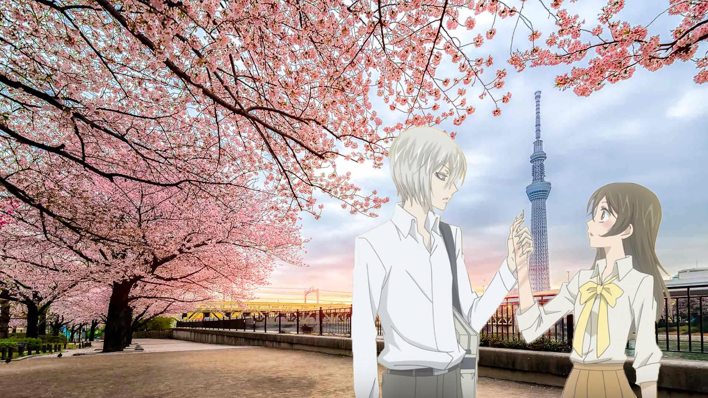
After
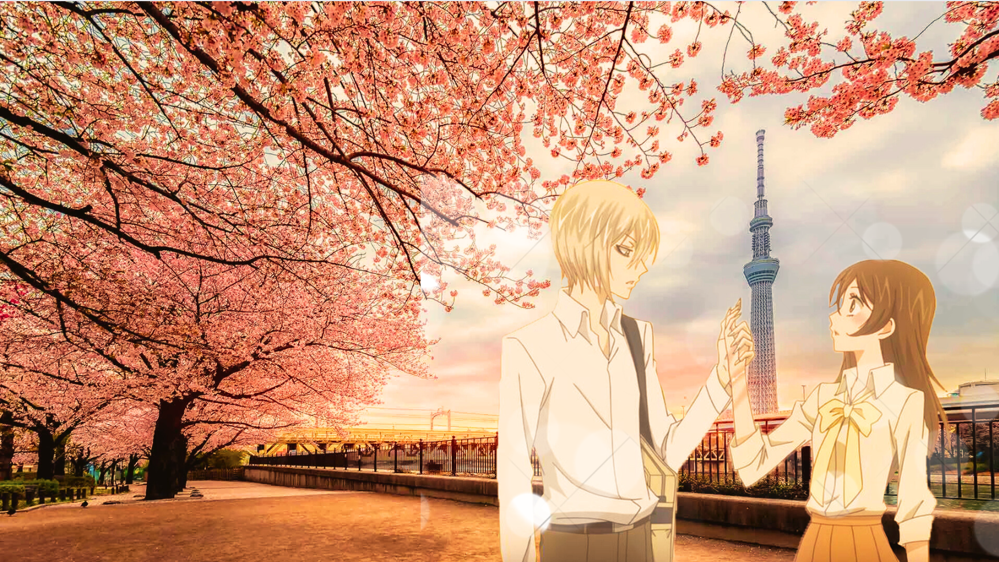

For this artwork, I edited a warm-hearted scene from the anime, Kamisama Kiss, with a background of the city of Tokyo. My goal is to make it look like an early 2000s vibe by making a reddish-yellow lighting. It reminds me of the Vietnamese karaoke music videos that I grew up with. The materials I used are Adobe Photoshop and Canva.
Bloom Into You: Yuu & Touko Edits
Before
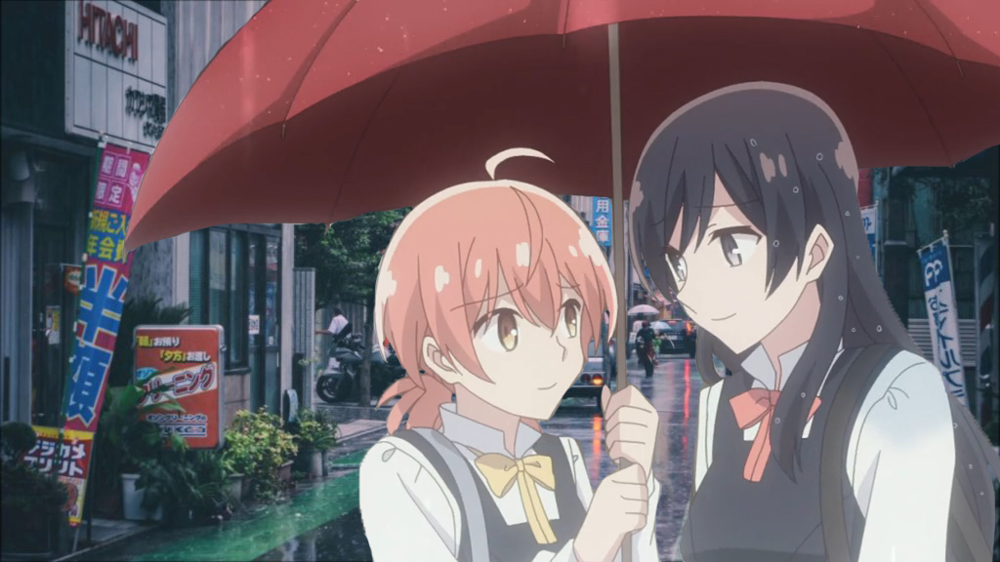
After
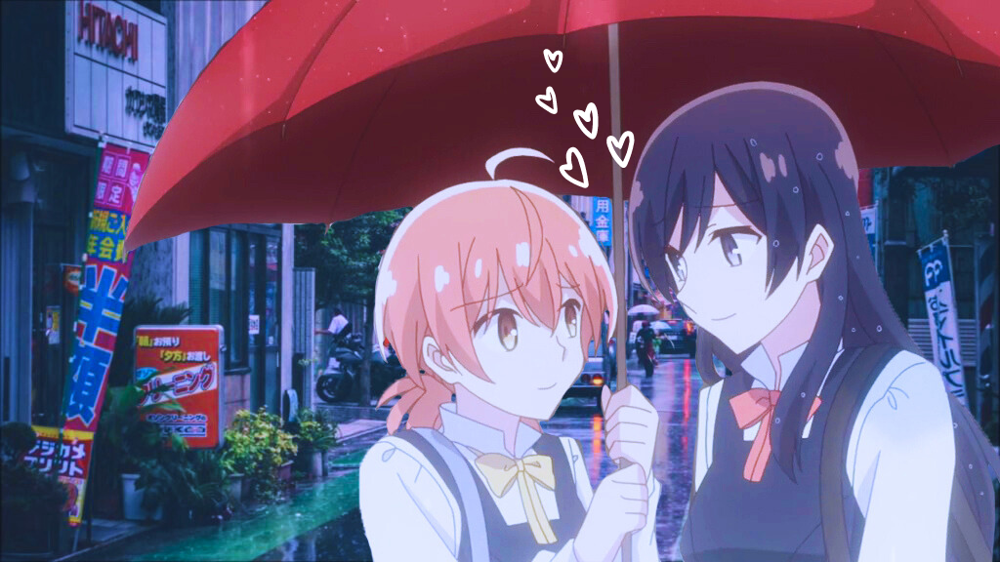
To create more of a 90s shoujo-style mashup with modern shoujo anime, I used a rainy setting of Tokyo, and added and cut out an image of Yuu and Touko from the yuri shoujo anime and manga, Bloom Into You. The subgenre "yuri" means girls love or lesbians love in Japanese. The materials I used are also Adobe Photoshop and Canva. I think I succeeded this one the most because of how the blue tint compliments the setting and the characters, which transforms this scene into the 90s romantic moment I want to achieve.
Out of the two parts in this final series, I prefer the glitch Shoujo mashups more because of how energetic and complex each artworks are. It's fun manipulating the backgrounds to create more of paralyzed, radio-wave like, or calming settings, and having the characters interact in those settings. However, the non-glitched mashups will appeal a current audience more because of how each artwork creates 90s dreamy effect towards modern anime and feels more realistic.